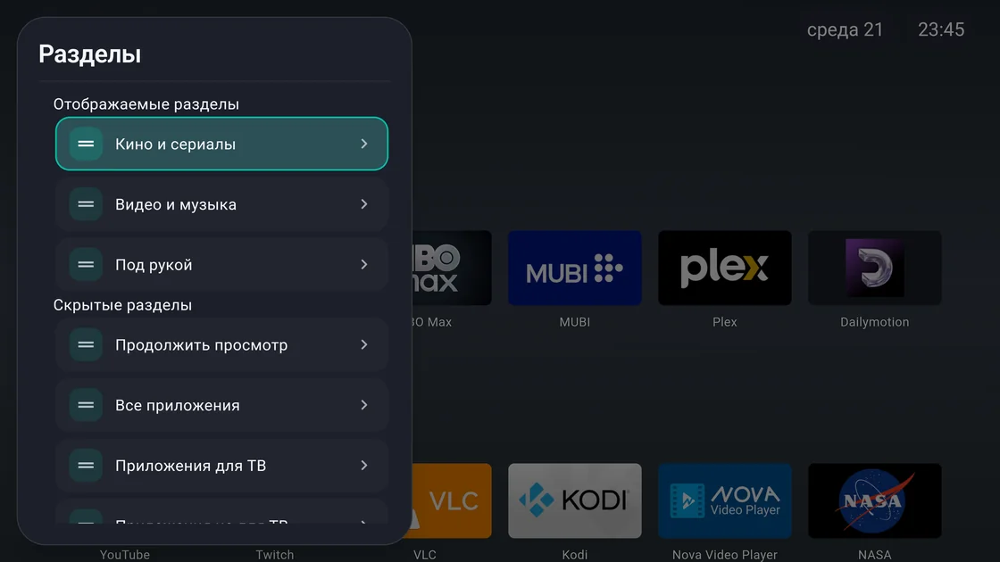
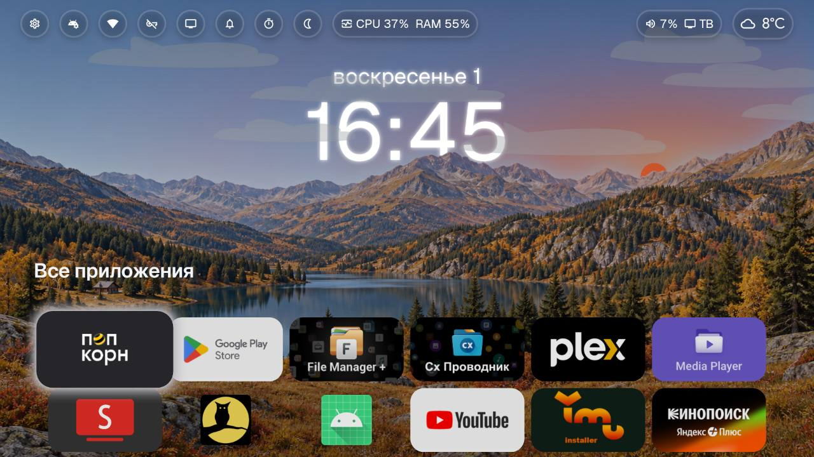
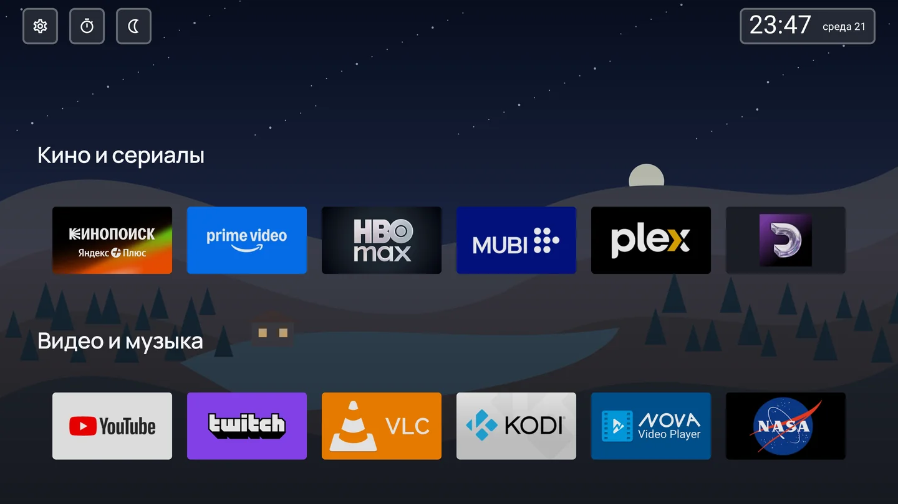
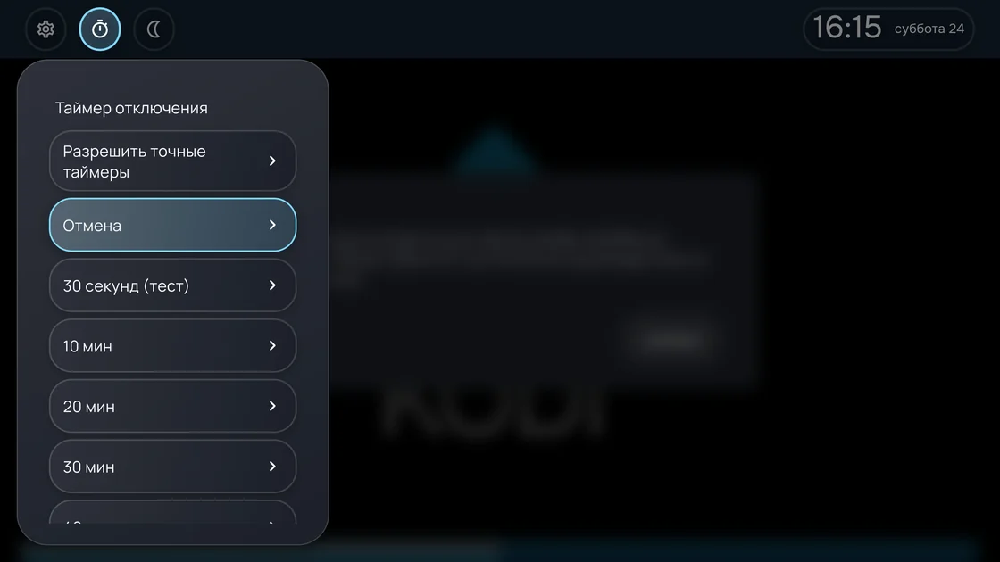

Приложения в своём порядке
Создавайте разделы, закрепляйте избранное, скрывайте лишнее. Показывайте приложения в ленте или сетке.
Для Android TV и Google TV
Соберите любимые приложения, выберите оформление и управляйте всем с пульта. Домашний экран без рекламных блоков.

01 Скриншоты
От прозрачного стекла до спокойных контуров. Выберите вариант, чтобы рассмотреть настоящий экран лаунчера.

КонтурныйРисованная ночь
Сторонние приложения на снимках устанавливаются отдельно.
02 Возможности
От порядка приложений до вечернего просмотра. Настройте то, чем пользуетесь каждый день.

Создавайте разделы, закрепляйте избранное, скрывайте лишнее. Показывайте приложения в ленте или сетке.

Открывайте нужные действия с пульта. В верхнюю панель можно добавить часы, погоду, календарь, сеть и входы ТВ.
Назначайте действия на короткое нажатие и удержание кнопок. Открывайте приложение или панель одним нажатием.
Меняйте размеры и подписи плиток, цвета и прозрачность. Добавьте свои обои или пейзаж, который меняется со временем суток.
Выбирайте теплоту и затемнение вручную, по расписанию или закату. Таймер переведёт ТВ в режим ожидания на совместимых устройствах.
Сохраняйте настройки вручную или по расписанию и переносите их на другой телевизор.
03 Установка
Для телевизоров и приставок с Android TV или Google TV на базе Android 9 и новее.
Руководство пользователяКнопка «Скачать APK» загружает последнюю стабильную универсальную сборку. Другие версии и сборки доступны в списке релизов.
Откройте APK на ТВ. При необходимости разрешите установку из выбранного источника.
Откройте CuteLauncher и расположите приложения. Выбор домашнего приложения зависит от прошивки.
Системные действия, включая Home, HDMI и ADB, зависят от прошивки и выданных разрешений.